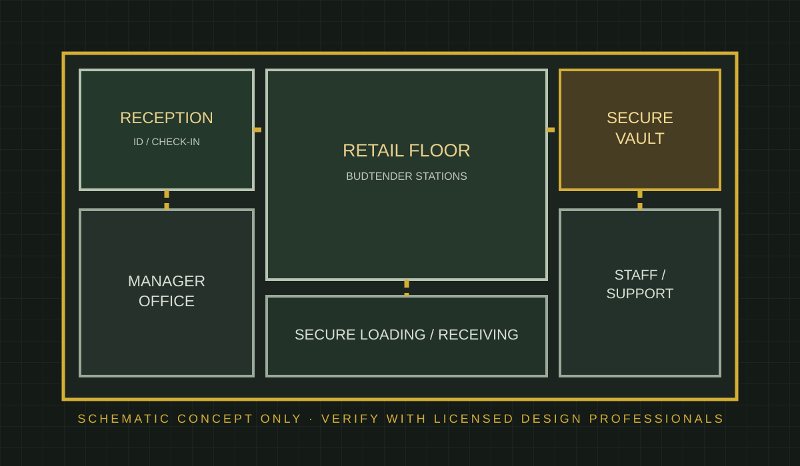
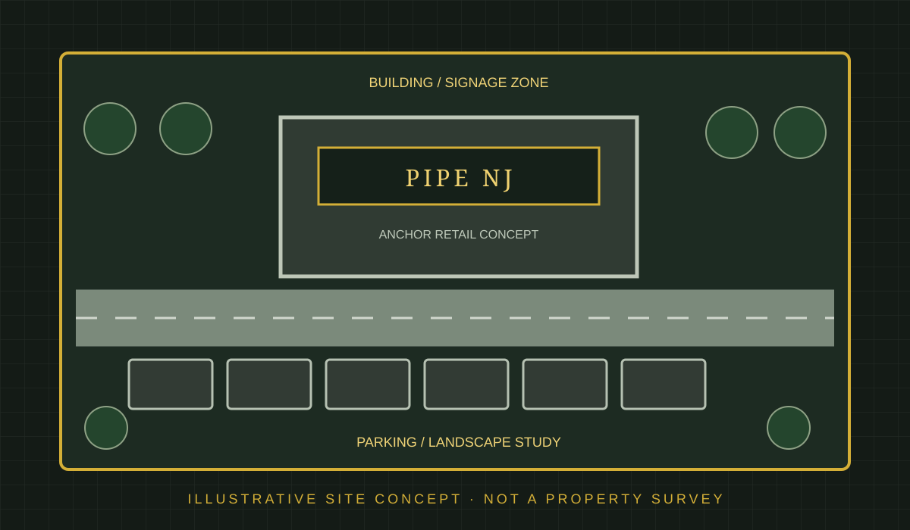
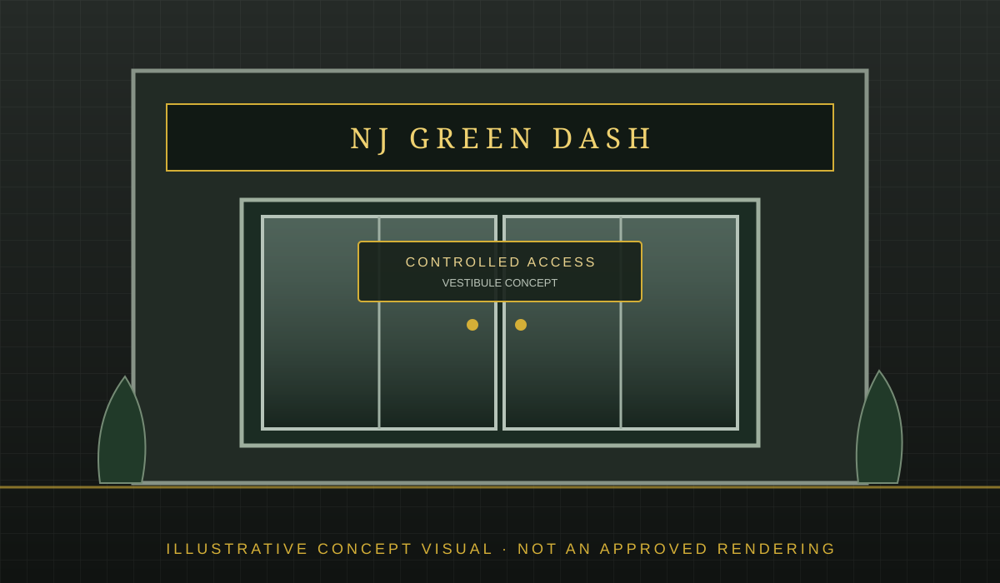
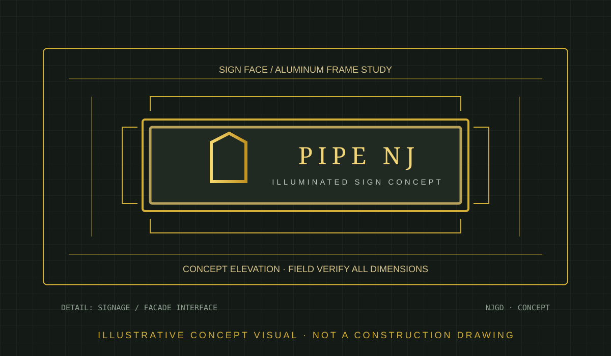

01 · DISPENSARY
01 · DISPENSARYGarden State Flagship
Premium street-facing retail concept with a welcoming entry sequence, natural materials and clear customer circulation.
From first concept to opening day, NJ Green Dash helps shape distinctive dispensary, cultivation and processing environments with thoughtful planning, practical layouts and a clear path through project development.
Let’s Plan Your Project →A range of illustrative project directions—from welcoming retail environments to scalable cultivation and purpose-built processing spaces. These are concept studies created to demonstrate possibilities, not completed client projects.
01 · DISPENSARYPremium street-facing retail concept with a welcoming entry sequence, natural materials and clear customer circulation.
 02 · DISPENSARY
02 · DISPENSARYCoastal-inspired boutique with warm wood, bright merchandising zones and an intimate consultation area.
 03 · DISPENSARY
03 · DISPENSARYCompact urban retail plan emphasizing efficient service points, accessible pathways and a strong storefront identity.
 04 · DISPENSARY
04 · DISPENSARYPatient- and guest-focused concept balancing reception, private conversations, secure back-of-house and retail display.
 05 · CULTIVATION
05 · CULTIVATIONDaylight-oriented greenhouse concept with separated growing zones, service access and room for future expansion.
 06 · CULTIVATION
06 · CULTIVATIONControlled-environment facility concept organized around cultivation rooms, support corridors and environmental systems.
 07 · CULTIVATION
07 · CULTIVATIONEarly-stage plant production concept with propagation, nursery, staging and staff support spaces.
 08 · PROCESSING
08 · PROCESSINGWorkflow-led production concept with distinct receiving, processing, secure storage and quality review zones.
 09 · LAB & QUALITY
09 · LAB & QUALITYClean, organized support environment concept for sample handling, documentation, testing coordination and staff work.
 10 · OPERATIONS
10 · OPERATIONSMulti-function campus concept connecting administration, staff amenities, secure logistics and operational support.
11 · DISPENSARYA streamlined pickup-forward storefront concept with a dedicated welcome zone, express counter and separate staff circulation.
12 · DISPENSARYAdaptive-reuse concept transforming an existing industrial shell into a warm, modern retail destination.
13 · DISPENSARYA community-scale dispensary concept with intuitive wayfinding, accessible customer flow and flexible display zones.
14 · DISPENSARYA two-level retail study exploring vertical circulation, a welcoming ground floor and discreet administrative support above.
15 · CULTIVATIONA phased modular facility concept designed around repeatable cultivation bays, shared support rooms and expansion planning.
16 · CULTIVATIONA hybrid greenhouse concept balancing daylight use with dedicated propagation, service and environmental-control areas.
17 · CULTIVATIONA specialized early-stage plant production concept with clean workflow zones, controlled access and technical support spaces.
 18 · CULTIVATION
18 · CULTIVATIONAn expansion study showing how additional grow rooms and support functions might connect to an existing facility footprint.
19 · PROCESSINGA workflow-focused concept for packaging, labeling, finished-goods staging and outbound order preparation.
20 · OPERATIONSA logistics-support concept with receiving, secure inventory, dispatch coordination and separated staff/vehicle circulation.
Sample planning studies show how adjacencies, circulation and operational zones can be considered early. Final drawings, dimensions and code requirements must be developed and verified for each actual site.

Entry, reception, sales, consultation, secure storage and staff support relationships.
Plan a retail layout →
Conceptual access, parking, service areas, landscape buffers and building placement.
Explore site planning →
Conceptual arrival, controlled access, reception and transition between zones.
Discuss access planning →
Storefront character, visibility, material palette and signage direction.
Shape your exterior →Collaborative planning that helps owners understand the decisions, specialists and approvals that may be involved.
Understand your goals, site, intended operation, budget and project stage.
Develop a concept direction, preliminary space program and planning priorities.
Identify the architects, engineers, code consultants and other licensed professionals needed.
Support project coordination as the concept moves toward detailed design and approvals.
Tell us what you’re planning. We’ll start with a conversation about your goals, your site and the next practical steps.
Share a little about your project and the type of facility you have in mind.
Illustrative concepts are for inspiration and discussion only. They are not architectural, engineering, construction or permit drawings and do not represent regulatory approval or guaranteed compliance.